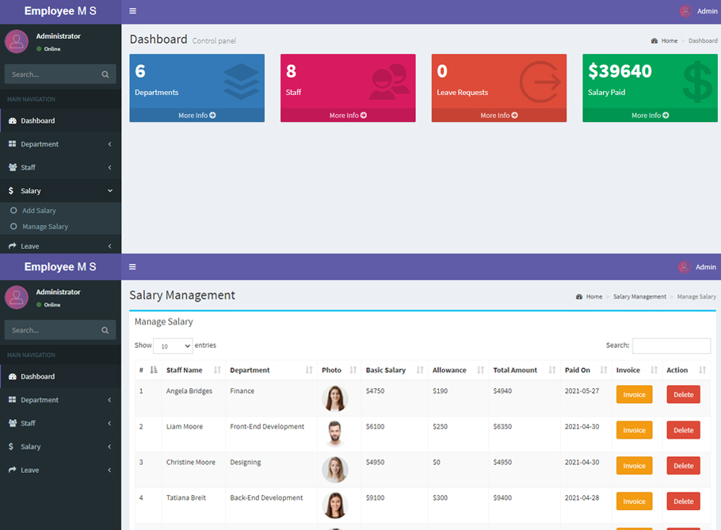

PHP Employee Management System

Project Overview
A comprehensive web-based employee management system developed using PHP and MySQL. This system streamlines HR processes and provides an efficient way to manage employee information, attendance, and payroll.
Key Features
- Employee Information Management
- Personal details management
- Employment history tracking
- Document management
- Attendance System
- Daily attendance tracking
- Leave management
- Attendance reports generation
- Payroll Management
- Salary calculation
- Deduction management
- Payment history
- Department Management
- Department creation and management
- Employee department assignment
- Department-wise reporting
Technical Implementation
- Frontend: HTML5, CSS3, JavaScript, Bootstrap
- Backend: PHP
- Database: MySQL
- Additional Tools: XAMPP Server
Project Challenges & Solutions
- Challenge: Complex database relationships
Solution: Implemented normalized database design with proper foreign key constraints
- Challenge: Security concerns
Solution: Implemented secure authentication and input validation
- Challenge: Performance optimization
Solution: Optimized database queries and implemented caching
Learning Outcomes
- Gained expertise in PHP and MySQL database management
- Learned best practices in web security
- Improved understanding of HR management systems
- Enhanced skills in database design and optimization